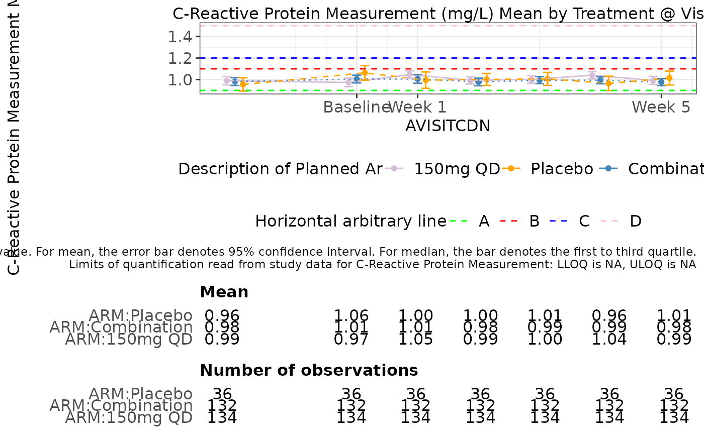
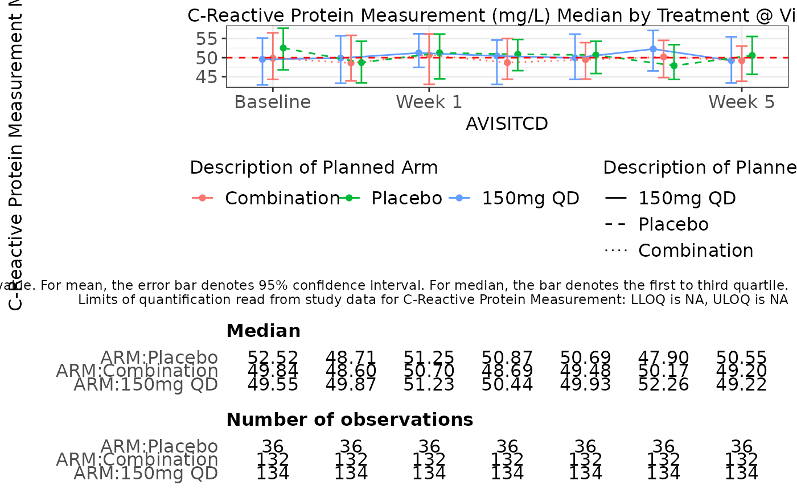
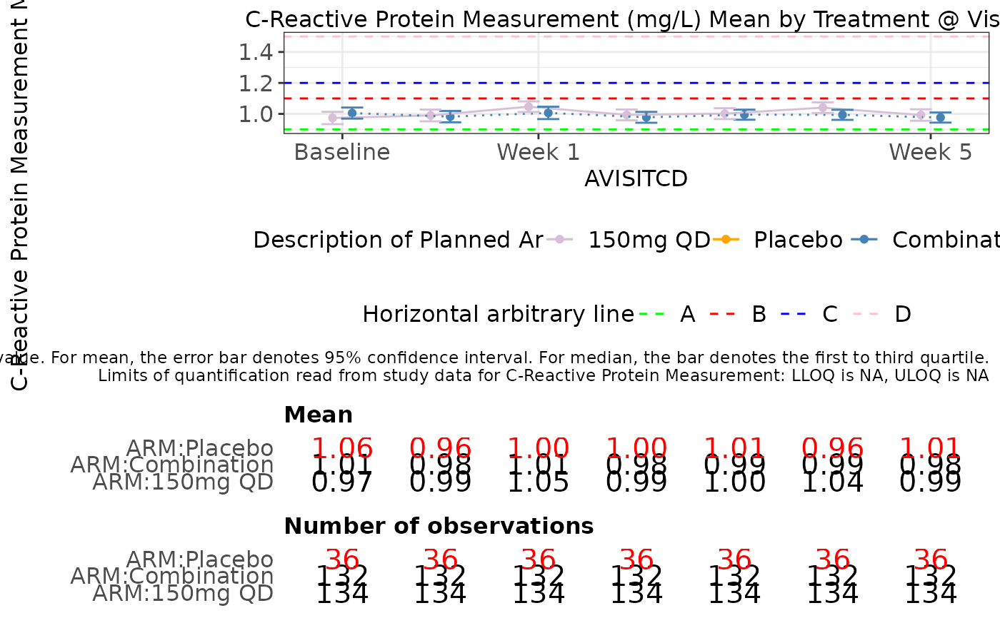
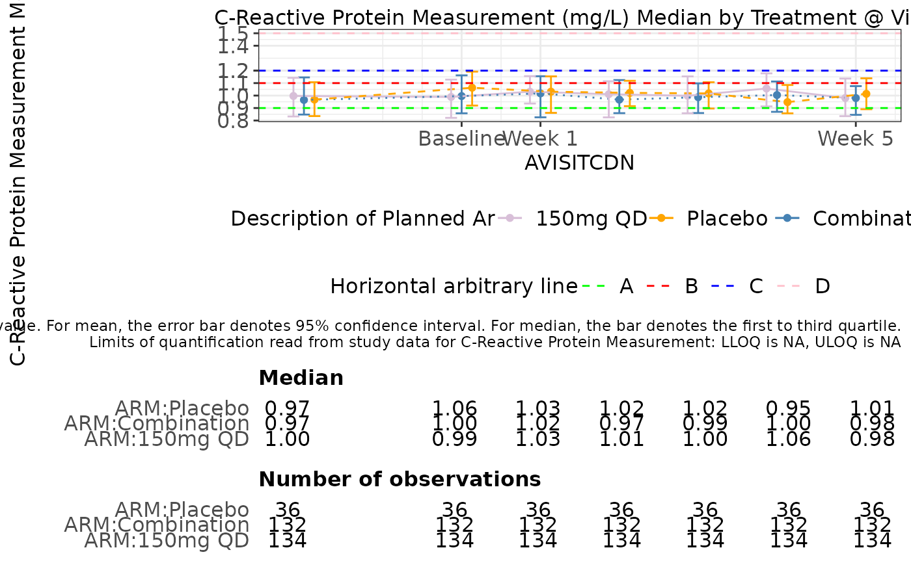
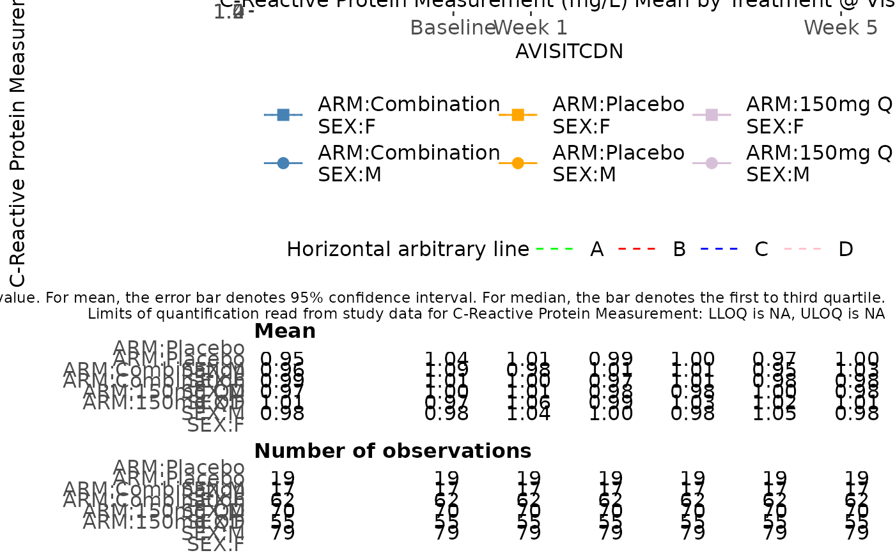
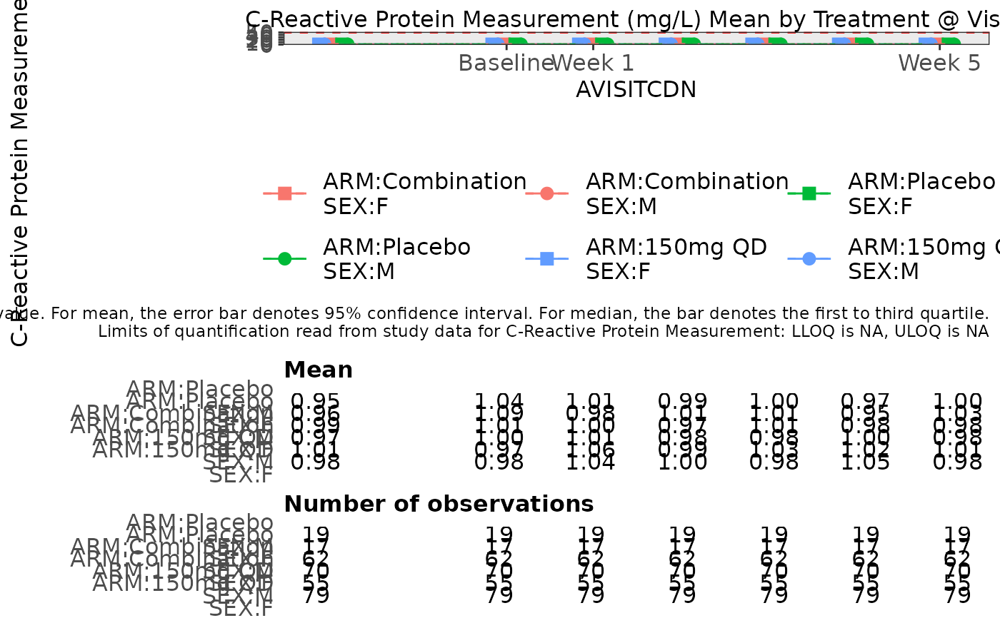

g_lineplot.RdFunction to create line plot of summary statistics over time.
g_lineplot(
label = "Line Plot",
data,
biomarker_var = "PARAMCD",
biomarker_var_label = "PARAM",
biomarker,
value_var = "AVAL",
unit_var = "AVALU",
ylim = c(NA, NA),
trt_group,
trt_group_level = NULL,
shape = NULL,
shape_type = NULL,
time,
time_level = NULL,
color_manual = NULL,
line_type = NULL,
median = FALSE,
hline_arb = numeric(0),
hline_arb_color = "red",
hline_arb_label = "Horizontal line",
xtick = ggplot2::waiver(),
xlabel = xtick,
rotate_xlab = FALSE,
plot_font_size = 12,
dodge = 0.4,
plot_height = 989,
count_threshold = 0,
table_font_size = 12,
display_center_tbl = TRUE
)text string to be displayed as plot label.
ADaM structured analysis laboratory data frame e.g. ADLB.
name of variable containing biomarker names.
name of variable containing biomarker labels.
biomarker name to be analyzed.
name of variable containing biomarker results.
name of variable containing biomarker result unit.
('numeric vector') optional, a vector of length 2 to specify the minimum and maximum of the y-axis if the default limits are not suitable.
name of variable representing treatment group.
vector that can be used to define the factor level of trt_group.
categorical variable whose levels are used to split the plot lines.
vector of symbol types.
name of variable containing visit names.
vector that can be used to define the factor level of time. Only use it when x-axis variable is character or factor.
vector of colors.
vector of line types.
boolean whether to display median results.
('numeric vector') value identifying intercept for arbitrary horizontal lines.
('character vector') optional, color for the arbitrary horizontal lines.
('character vector') optional, label for the legend to the arbitrary horizontal lines.
a vector to define the tick values of time in x-axis. Default value is ggplot2::waiver().
vector with same length of xtick to define the label of x-axis tick values. Default value is ggplot2::waiver().
boolean whether to rotate x-axis labels.
control font size for title, x-axis, y-axis and legend font.
control position dodge.
height of produced plot. 989 pixels by default.
integer minimum number observations needed to show the appropriate
bar and point on the plot. Default: 0
float controls the font size of the values printed in the table.
Default: 12
boolean whether to include table of means or medians
ggplot object
Currently, the output plot can display mean and median of input value. For mean, the error bar denotes 95\ quartile.
# Example using ADaM structure analysis dataset.
library(scda)
library(stringr)
library(dplyr)
# original ARM value = dose value
arm_mapping <- list("A: Drug X" = "150mg QD", "B: Placebo" = "Placebo", "C: Combination" = "Combination")
color_manual <- c("150mg QD" = "thistle", "Placebo" = "orange", "Combination" = "steelblue")
type_manual <- c("150mg QD" = "solid", "Placebo" = "dashed", "Combination" = "dotted")
ASL <- synthetic_cdisc_data("latest")$adsl %>%
filter(!(ARM == "B: Placebo" & AGE < 40))
ADLB <- synthetic_cdisc_data("latest")$adlb
ADLB <- right_join(ADLB, ASL[, c("STUDYID", "USUBJID")])
#> Joining, by = c("STUDYID", "USUBJID")
var_labels <- lapply(ADLB, function(x) attributes(x)$label)
ADLB <- ADLB %>%
mutate(AVISITCD = case_when(
AVISIT == "SCREENING" ~ "SCR",
AVISIT == "BASELINE" ~ "BL",
grepl("WEEK", AVISIT) ~
paste(
"W",
trimws(
substr(
AVISIT,
start = 6,
stop = str_locate(AVISIT, "DAY") - 1
)
)
),
TRUE ~ NA_character_
)) %>%
mutate(AVISITCDN = case_when(
AVISITCD == "SCR" ~ -2,
AVISITCD == "BL" ~ 0,
grepl("W", AVISITCD) ~ as.numeric(gsub("\\D+", "", AVISITCD)),
TRUE ~ NA_real_
)) %>%
# use ARMCD values to order treatment in visualization legend
mutate(TRTORD = ifelse(grepl("C", ARMCD), 1,
ifelse(grepl("B", ARMCD), 2,
ifelse(grepl("A", ARMCD), 3, NA)
)
)) %>%
mutate(ARM = as.character(arm_mapping[match(ARM, names(arm_mapping))])) %>%
mutate(ARM = factor(ARM) %>%
reorder(TRTORD))
attr(ADLB[["ARM"]], "label") <- var_labels[["ARM"]]
g_lineplot(
label = "Line Plot",
data = ADLB,
biomarker_var = "PARAMCD",
biomarker = "CRP",
value_var = "AVAL",
trt_group = "ARM",
shape = NULL,
time = "AVISITCDN",
color_manual = color_manual,
line_type = type_manual,
median = FALSE,
hline_arb = c(.9, 1.1, 1.2, 1.5),
hline_arb_color = c("green", "red", "blue", "pink"),
hline_arb_label = c("A", "B", "C", "D"),
xtick = c(0, 1, 5),
xlabel = c("Baseline", "Week 1", "Week 5"),
rotate_xlab = FALSE,
plot_height = 600
)

g_lineplot(
label = "Line Plot",
data = ADLB,
biomarker_var = "PARAMCD",
biomarker = "CRP",
value_var = "AVAL",
trt_group = "ARM",
shape = NULL,
time = "AVISITCD",
color_manual = NULL,
line_type = type_manual,
median = TRUE,
hline_arb = c(.9, 1.1, 1.2, 1.5),
hline_arb_color = c("green", "red", "blue", "pink"),
hline_arb_label = c("A", "B", "C", "D"),
xtick = c("BL", "W 1", "W 5"),
xlabel = c("Baseline", "Week 1", "Week 5"),
rotate_xlab = FALSE,
plot_height = 600
)

g_lineplot(
label = "Line Plot",
data = ADLB,
biomarker_var = "PARAMCD",
biomarker = "CRP",
value_var = "AVAL",
trt_group = "ARM",
shape = NULL,
time = "AVISITCD",
color_manual = color_manual,
line_type = type_manual,
median = FALSE,
hline_arb = c(.9, 1.1, 1.2, 1.5),
hline_arb_color = c("green", "red", "blue", "pink"),
hline_arb_label = c("A", "B", "C", "D"),
xtick = c("BL", "W 1", "W 5"),
xlabel = c("Baseline", "Week 1", "Week 5"),
rotate_xlab = FALSE,
plot_height = 600,
count_threshold = 90,
table_font_size = 15
)

g_lineplot(
label = "Line Plot",
data = ADLB,
biomarker_var = "PARAMCD",
biomarker = "CRP",
value_var = "AVAL",
trt_group = "ARM",
shape = NULL,
time = "AVISITCDN",
color_manual = color_manual,
line_type = type_manual,
median = TRUE,
hline_arb = c(.9, 1.1, 1.2, 1.5),
hline_arb_color = c("green", "red", "blue", "pink"),
hline_arb_label = c("A", "B", "C", "D"),
xtick = c(0, 1, 5),
xlabel = c("Baseline", "Week 1", "Week 5"),
rotate_xlab = FALSE,
plot_height = 600
)

g_lineplot(
label = "Line Plot",
data = subset(ADLB, SEX %in% c("M", "F")),
biomarker_var = "PARAMCD",
biomarker = "CRP",
value_var = "AVAL",
trt_group = "ARM",
shape = "SEX",
time = "AVISITCDN",
color_manual = color_manual,
line_type = type_manual,
median = FALSE,
hline_arb = c(.9, 1.1, 1.2, 1.5),
hline_arb_color = c("green", "red", "blue", "pink"),
hline_arb_label = c("A", "B", "C", "D"),
xtick = c(0, 1, 5),
xlabel = c("Baseline", "Week 1", "Week 5"),
rotate_xlab = FALSE,
plot_height = 1500
)

g_lineplot(
label = "Line Plot",
data = subset(ADLB, SEX %in% c("M", "F")),
biomarker_var = "PARAMCD",
biomarker = "CRP",
value_var = "AVAL",
trt_group = "ARM",
shape = "SEX",
time = "AVISITCDN",
color_manual = NULL,
median = FALSE,
hline_arb = c(.9, 1.1, 1.2, 1.5),
hline_arb_color = c("green", "red", "blue", "pink"),
hline_arb_label = c("A", "B", "C", "D"),
xtick = c(0, 1, 5),
xlabel = c("Baseline", "Week 1", "Week 5"),
rotate_xlab = FALSE,
plot_height = 1500
)
